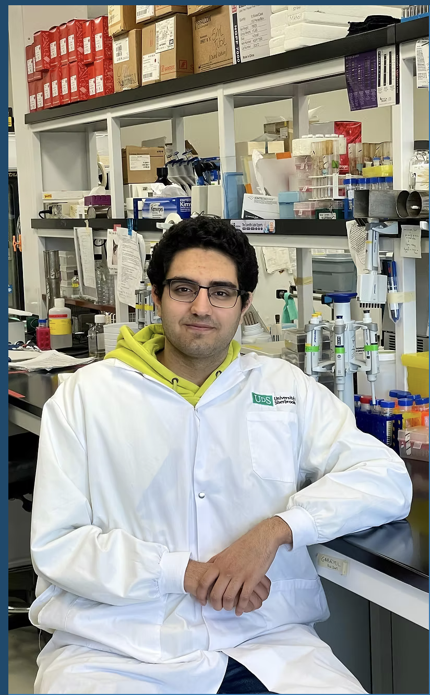
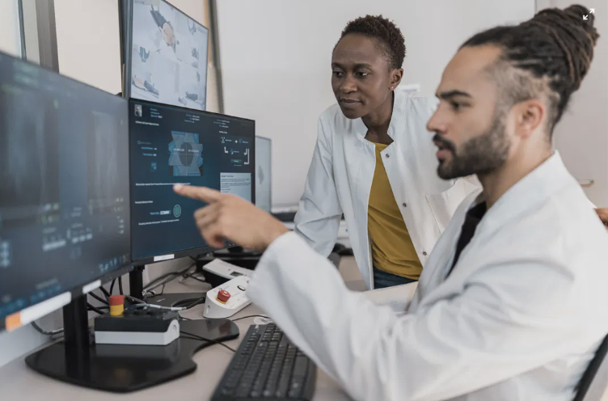

About me
Working in healthcare (cancer) research quickly taught me that clinical intuition is only half the battle; the tools and systems behind the scenes dictate how well the element of "care" is delivered. As a Health Sciences student at Waterloo in the Co-op stream, I have spent my degree learning how human physiology, medical science, and technology intersect, both in practice and education. Serving as an Undergraduate Cancer Research Assistant gave me my first real look at complex medical data, where I realized how data-driven insights can directly improve patient outcomes.
When I started university, I viewed healthcare through a strictly traditional clinical lens. Since medical school is my goal, but over the years it has come to change. Diving into health informatics and physiology shifted my perspective. Seeing how inefficient systems can bottleneck care inspired me to explore software engineering and AI applications in public health (which I am currently working on). Combining clinical science with technical problem-solving has completely change this view, pushing me to build tools that make medical interventions smarter and more accessible, before becoming one of the users

What I work by
Empathy
Choosing to work behind the bench meant giving up direct patient contact, and for a while that bothered me. What changed my thinking was realizing that if an oncolytic virus (cancer research) project works, it reaches people I will never meet. The distance is real, but so is the responsibility, and I try to keep the person at the end of the pipeline in mind even when the work in front of me is a sequence file.
Data-Driven Compassion
At Sherbrooke I worked with genomic data from oncolytic virus research while also speaking with patients who had been through similar cancer treatments. Hearing what treatment actually felt like, and then opening a dataset built from cases like theirs, made the two impossible to separate. I handle clinical and genomic data carefully because I have met the kind of person a row in that table describes.
Interdisciplinary Curiosity
The genetics I learned in BIOL 239 was not background knowledge for me but it was the thing that let me read genomic data well enough to help engineer a new virus. That combination is what I keep looking for. My current NSERC work with the renal department sits in the same space, applying AI to a clinical education problem that neither a pure programmer nor a pure health researcher could solve alone.
Continuous Adaptation
In three years I have gone from wet lab and bioinformatics work, to an instructional support role maintaining course websites, to software engineering and AI research. None of those transitions came with training; each one started with a problem I could not solve using what I already knew. I have stopped treating that as a setback and started treating it as the normal shape of the work.
Where I'm going
Short-term (Next 2 Years)
Finish my undergraduate degree and apply to medical school. Alongside that, I am completing an NSERC project with the Waterloo Region Health Network and the Faculty of Health, applying AI to nurse education, and I intend to keep contributing to their work through graduation.
If medical school does not work out immediately, I will pursue a master's while working as a health data analyst or software engineer in a public health setting. Both paths lead to the same place, so neither is a fallback.
Long-term
Practise as a physician-innovator, or complete a PhD in health informatics and work as a health software architect. What I want either way is to stay close to both the clinical problem and the system built to solve it.
Joining WRHN as an engineer who understands public health would be one version of that, and it is a direction I would take seriously if it opened up.

What I'm drawn to in health
I am particularly passionate about using health informatics to modernize public health monitoring and cancer care. Working with large-scale health data revealed how predictive models and AI can catch health trends early, streamline clinical decisions, and improve resource allocation for underserved communities.
- Health Informatics
- Cancer Research & Oncology
- AI in Medicine and Healthcare
- Biological and Health Sciences